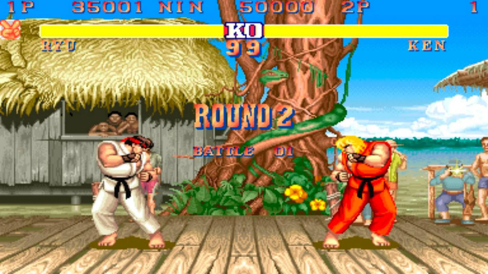
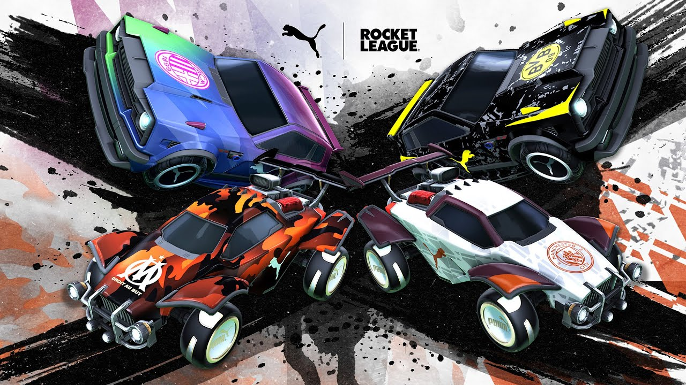
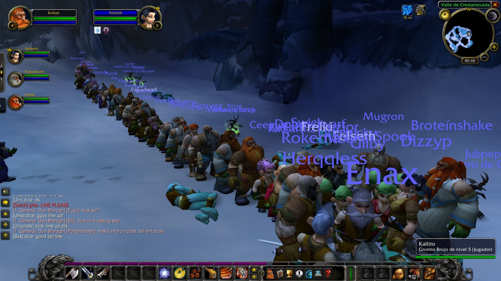
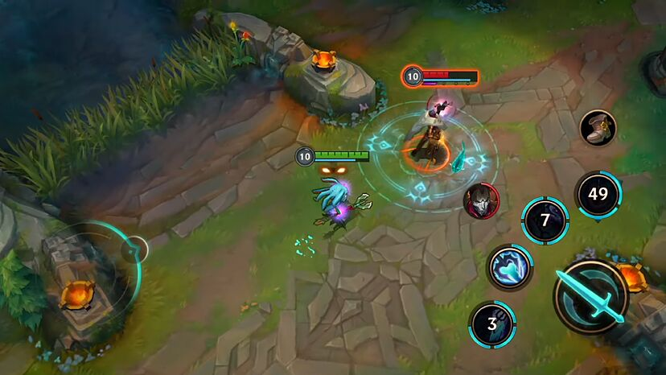
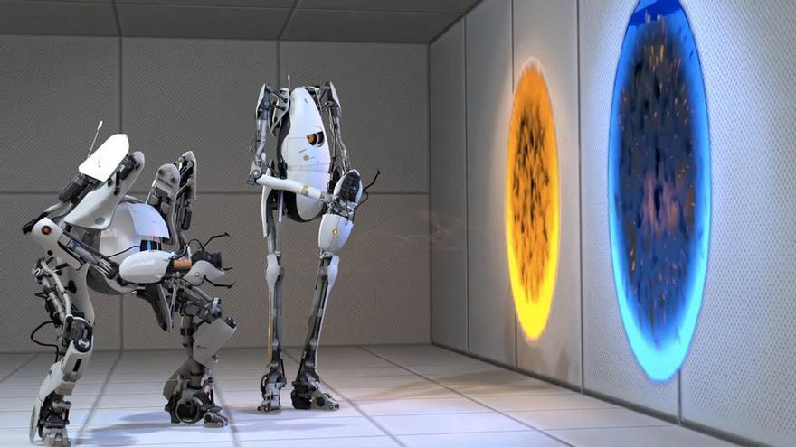
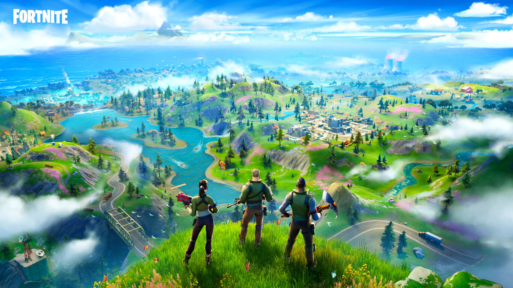
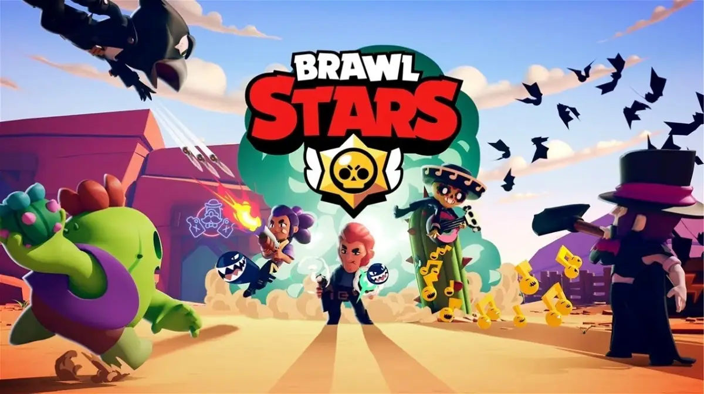

Multiplayer
Nº de Jugadors
El nombre de jugadors pot variar des de petits enfrontaments un a un fins a enfrontaments massius que poden implicar una gran quantitat de jugadors simultàniament. Cada format té els seus propis reptes i dinàmiques de joc, i la seva popularitat dependrà del tipus de joc i les preferències dels jugadors.
1 vs 1
Aquest format implica un enfrontament directe entre dos jugadors. És comú en jocs de lluita, esports electrònics com ara jocs de lluita, estratègia en temps real i esports com el xou o el boxe virtual.
2 vs 2 o més
En aquest format, dos equips de dos jugadors cadascun competeixen entre ells. És popular en jocs d'equips com ara jocs d'estratègia, esports electrònics com ara els MOBA (Arène de batalla en línia multijugador), i també en alguns jocs de tir en primera persona.
Masius
Aquests són jocs que poden albergar una gran quantitat de jugadors simultàniament, sovint centenars o fins i tot milers. Aquest tipus de jocs són comuns en MMORPG (Massive Multiplayer Online Role-Playing Games) com "World of Warcraft", jocs de supervivència com "Rust" o "Ark: Survival Evolved", i també en jocs de tir en línia com "Fortnite" o "PlayerUnknown's Battlegrounds (PUBG)".
Tipus de connexions
Cada tipus de connexió en els videojocs té les seves pròpies característiques i afecta la forma en què els jugadors interactuen entre ells.
Head-To-Head
Aquest tipus de connexió implica una competició directa entre dos jugadors, sovint en la mateixa ubicació física o a través de connexions directes en línia. Els jugadors es troben cara a cara i competeixen directament l'un contra l'altre. Exemple: "Chess" és un joc de tauler en què dos jugadors competeixen directament entre ells amb l'objectiu de capturar el rei de l'oponent.

Network/Peer-to-Peer
En aquest tipus de connexió, els jugadors es connecten directament entre ells a través d'Internet sense la necessitat d'un servidor central. Cada jugador actua com a servidor i client al mateix temps, compartint dades directament entre ells. Exemple: "Minecraft" ofereix la opció de joc en mode multijugador utilitzant una connexió peer-to-peer, permetent que els jugadors s'uneixin a servidors creats pels seus amics o connectin directament amb altres jugadors per a sessions de joc compartides.

LAN (Local Area Network - Xarxa Local)
Aquest tipus de connexió es produeix quan els jugadors es connecten a la mateixa xarxa local, com ara una connexió Wi-Fi domèstica o una xarxa d'empresa, per a jugar entre ells sense la necessitat d'Internet extern. Exemple: "Counter-Strike" és un joc de tir en primera persona que suporta partides multijugador a través de connexions LAN. Els jugadors poden connectar els seus ordinadors a la mateixa xarxa local per a jugar partides multijugador en temps real sense necessitat d'Internet extern.

Tipus de videojocs
Cada tipus de videojoc ofereix una experiència de joc única, influïda per la forma en què els jugadors interactuen entre ells.
Competitius
En aquest tipus de videojoc, els jugadors competeixen directament entre ells per aconseguir un objectiu o superar els altres jugadors. Els elements de competitivitat solen ser una part central de la jugabilitat, i els jugadors es mesuren per la seva habilitat, estratègia o rendiment. Exemple: "League of Legends" és un joc MOBA (Arène de batalla en línia multijugador) en què dos equips de jugadors competeixen per destruir la base de l'altre equip. La competitivitat és crucial, i els jugadors han de col·laborar en equip i superar els seus rivals per aconseguir la victòria.
Cooperatius
En aquest tipus de videojoc, els jugadors col·laboren entre ells per assolir un objectiu comú. La cooperació i la coordinació són essencials per aconseguir l'èxit, i els jugadors han de treballar junts per superar desafiaments o complir missions. Exemple: "Portal 2" és un joc de puzzles en què dos jugadors han de col·laborar per superar nivells complexos utilitzant portals i resolent desafiaments. La cooperació és clau, ja que els jugadors han de comunicar-se i coordinar-se per a avançar.
Conjugats
Aquests són videojocs que combinen elements competitius i cooperatius en la seva jugabilitat. Els jugadors poden competir entre ells en alguns aspectes del joc mentre col·laboren en altres. Exemple: "Fortnite" és un joc de supervivència en línia que combina elements de construcció, disparat i supervivència. El joc ofereix modes competitius com "Battle Royale", on els jugadors competeixen per ser l'últim supervivent, i també modes cooperatius com "Save the World", on els jugadors col·laboren per defensar-se contra hordes de monstres i completar missions. Això ofereix una experiència de joc conjugada que satisfà les necessitats tant dels jugadors competitius com dels cooperatius.
Tipus de Vincu·lació / Apallerament
Basat en Nivells
Aquest sistema agrupa els jugadors en funció del seu nivell de destresa o experiència en el joc. Això assegura que els jugadors novells no es trobin amb jugadors veterans, i viceversa. Exemple: En "Clash Royale", els jugadors són emparellats en partides segons el seu nivell de torre i el nivell de les seves cartes, assegurant partides equilibrades.

Basat en Trofeus
En aquest sistema, els jugadors són emparellats segons la quantitat de trofeus que han guanyat durant les seves partides. Això proporciona una mesura clara de l'habilitat del jugador. Exemple: A "Brawl Stars", els jugadors són emparellats amb altres jugadors que tenen un nombre similar de trofeus, assegurant partides competitives.
Basat en Rendiment
Aquest sistema té en compte el rendiment del jugador en les seves partides més recents per emparellar-lo amb altres jugadors de rendiment similar. Exemple: En "FIFA", el sistema de divisió rivals emparella els jugadors basant-se en els resultats de les seves partides recents per assegurar partides equilibrades.